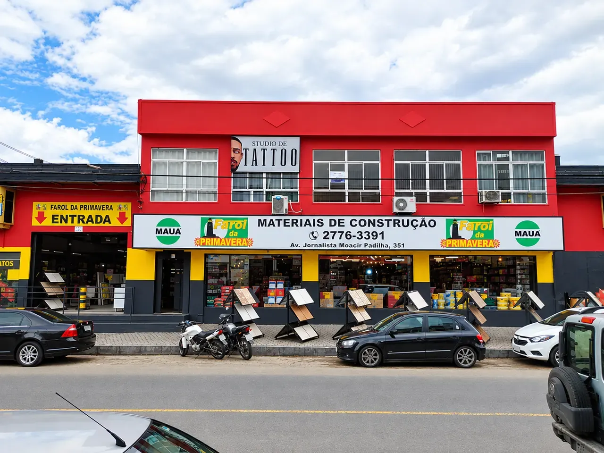
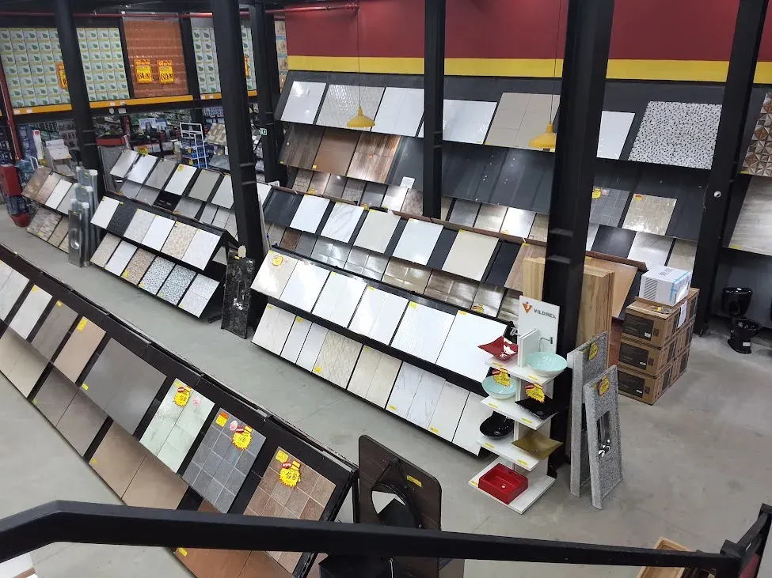
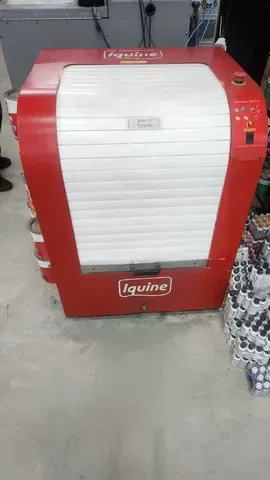
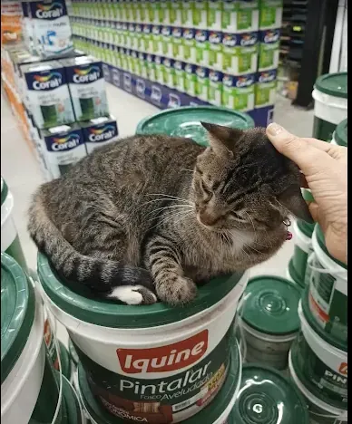

DESDE 1979
Há mais de 45 anos iluminando as obras do Jardim Primavera
A Farol da Primavera é uma loja tradicional de materiais para construção, reforma e acabamento em Duque de Caxias. Do saco de cimento ao acabamento final, ajudamos quem está construindo, reformando ou dando uma cara nova para a casa.

1979o ano em que o farol acendeu no Jardim Primavera
7 mil+produtos disponíveis no site
+5 milcores no tintométrico, feitas na hora
Venha nos visitar


